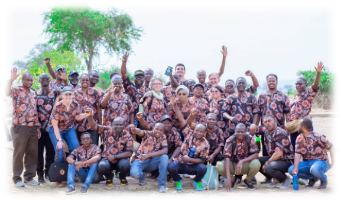
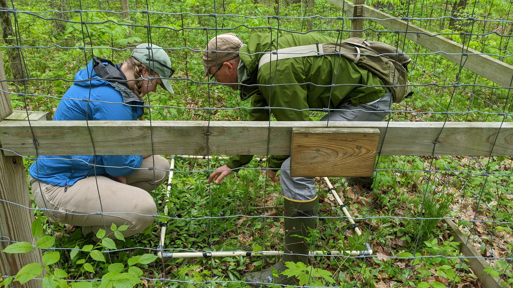
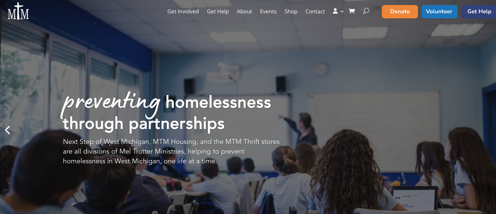
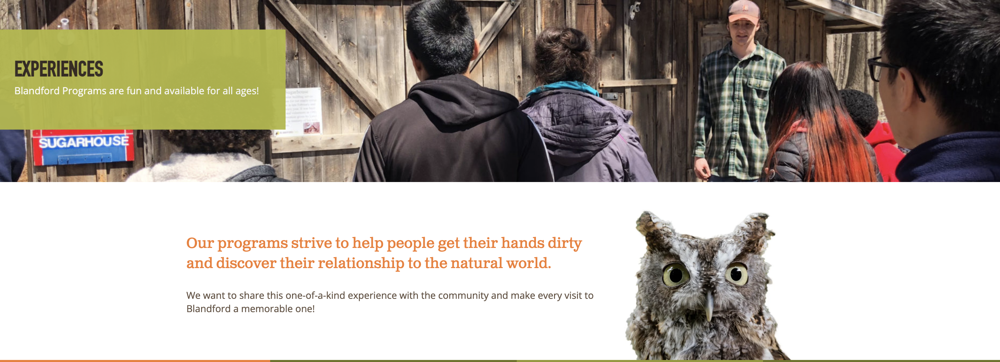

Project Partners - Fall 2024
Purpose
This document provides an overview of the project partners who have agreed to collaborate with STAT 245 students this semester. This information is provided to provide students with information about each partner and their proposed project, to help choose which projects they might prefer.
McQueen Analytics
McQueen Analytics is a cutting-edge market research and data analytics company dedicated to providing businesses with actionable insights to elevate their brand performance. Our diverse range of services includes brand analysis, brand equity assessment, tracking studies, and a comprehensive in-house reporting tool that seamlessly consolidates data from internal and external sources for real-time performance evaluation. - https://mcqueenanalytics.com/
The firm aims to specialize in work with non-profit and faith-based organizations, and the founder is very motivated to work with Calvin students specifically.
Contact Person: Carl McQueen
Carl started McQueen Analytics in 2020 as a data science and market research company focused on organizations trying to do more good in this world.
His clients range from a major campaign aimed to present Jesus in an approachable way, hospitals, universities, a streaming television series and small businesses tackling hard problems.
Before starting McQueen Analytics in 2020, Carl was a data scientist at Wells Fargo Advisors in Saint Louis, Mo where he spent ten years working with a wide variety of departments unlocking insight through large data. Benefit from Carl’s expertise and 15 years of experience in data science. Carl will guide you through the data, offering invaluable mentorship and insights from his extensive experience in the field.
You may also have the opportunity to collaborate with Henry Goldkuhle, a recent Calvin graduate who currently works at McQueen Analytics.
Data and Questions
Learn to explore and analyze a real-world marketing dataset, spanning from January 2023 to June 2024, to understand the factors influencing campaign awareness – a major metric for all brands in marketing.
In this project, you will work with survey data collected weekly and combined into a single comprehensive dataset. You will investigate the relationship between various factors such as demography, religious model score (a measure of faith commitment), self-reported media usage, and more, to determine their significance on the awareness of people over time.
Your modeling work on this project will allow you to explore and interpret the interpret of multiple factors on marketing campaign awareness.
49507 Initiative / Wayfinder Program at Calvin
The Wayfinder Program offers eight free Calvin University credits to adult learners in Grand Rapids who face social and economic barriers to higher education. This program, offered through Calvin’s School of Graduate and Continuing Studies, was created based on research from the 49507 Initiative. Inspired by The Clemente Course in the Humanities, Wayfinder includes support services such as childcare, transportation support, books, laptops, and dinner before evening classes in order to make college more accessible.
Contact Person: Abbie Lipsker
Data and Questions
After each course in the three-course sequence, Wayfinder students complete a program evaluation. We use a method called Customer First Measurement to measure students’ satisfaction, the value they see in the program, their sense of personal transformation and empowerment. The project involves analyzing and visually presenting the first batch of data collected. The analysis will help the School of Graduate and Continuing Studies to iteratively improve the program for current and (hopefully) future students.
Discipling Marketplace Leaders

Discipling Marketplace Leaders (DML) is a ministry that started in Kenya and is now working across Africa and Asia. It has been formed and shaped by African pastors and business men/women. Our vision is to reclaim the redeemed marketplace through Church-based Business as Mission and bring it under the Lordship of Christ. We do this by empowering the local church to establish and run successful workplace ministries, empowering, equipping, encouraging, and discipling every person to have a quadruple bottom line: social, economic, environmental, and missional.
What do we believe?
We believe that the purpose of Sunday is Monday, and that the purpose of the church when gathered is to equip the church for when they are scattered. We are to be salt and light in every sphere of influence by doing our work with excellence and integrity. God has called us to create wealth (Deut. 8:18) but we are to do it His way!

Contact Person: Renita Reed-Thomson
Data and Questions
Over the years, DML has done research to see if our ministry is helping
- the church to grow (numerically, financially, in participation),
- businesses to grow (profit, sales, employees, household income for business owner), and
- the community (through volunteerism, mentoring, better business services, increased donations, discipleship of employees).
Our research has been over two years each time, and we have seen good results in all three areas. But we believe that an even longer research study will tell us more. So we are currently doing a five-year research study in Burundi, with 800 young adults (aged 18-35) who are in 22 different churches. Burundi is one of the poorest countries in the world and young adults are leaving the country at alarming rates, seeking greener pastures. But there has not been good teaching about a theology of work by the church and the faith of the Burundians has been left in the church building. We want to study what will change when a church has a workplace discipleship ministry that actively equips every member to do their work as an act of worship, and when people are affirmed that God is in their workplace and they are to join Him in what He is doing!
Eco Preserve: Deer Exclosures

The Calvin Ecosystem Preserve & Native Gardens (CEPNG) conserves, restores and interprets native ecosystems to inspire people to value and protect the wonder of creation.
Our vision: We envision a sustainable ecosystem preserved for future generations. Our story: The Ecosystem Preserve was established in 1985 to restore and maintain this example of a West Michigan ecosystem. It occupies the northern half of Calvin University’s east campus. -https://calvin.edu/ecosystem-preserve/about-us
Contact Person: Matt Dykstra
Matt serves as Managing Director of the Calvin Ecosystem Preserve, and previously worked as a teacher, professor, and manager at the Pierce Cedar Creek Institute (a nature center and biological field station in Hastings, MI). He says about himself,
I have a particular interest in Natural Areas Management and the natural history of the Great Lakes landscape. I love learning about the many species that call this area home and how best we can provide for their long-term survival. I have a special interest in native plants, especially rare and unusual plants. I am also a big fan of prescribed fire as a tool for managing ecosystems. -https://calvin.edu/people/matthew-dykstra
Data and Questions

image from: https://extension.umn.edu/planting-and-growing-guides/white-tailed-deer-damage
Deer and plants in the forest understory

Deer overpopulation can cause significant impacts on vegetation in natural areas. This project will analyze the impacts of white-tailed deer browse over a nine-year period at Pierce Cedar Creek Institute. Plants species were identified and their cover estimated for both spring and summer within four deer exclosures (pictured above) and nearby paired areas outside the exclosures. A goal of this project is to evaluate what changes took place over that period and help determine the impact that white-tailed deer are having on the forest understory.
Mel Trotter Ministries

Mel Trotter Ministries exists to demonstrate the compassion of Jesus Christ toward anyone experiencing hunger and homelessness. Through the power of Christ, working to bring an end to homelessness one life at a time. We are at the forefront of battling homelessness through community partnerships and innovative solutions. Our mission is to be the answer when someone asks “What do I do if I’m homeless?” - https://www.meltrotter.org/about/
Take a virtual tour of MTM!
Contact Person: Joe Botting
Joe serves as Director of Grants & Data at Mel Trotter Ministries.
Data and Questions
MTM has a ton of data and questions of interest that they wish to partner with Calvin students and work on!
The work this semester will be a continuation and elaboration of work begun last semester, probably prioritizing idea #1 below. The exact aims will be decided in collaboration with Joe, but some ideas are:
1. Predicting Success in Ending Homelessness
This project will look at individuals experiencing homelessness who enroll in programs at Mel Trotter and will predict their probability of graduating their respective program based on early indicators such as age, race, income, disability, frequency of touch points, and other factors. More than twenty variables, from demographics to activity during enrollment, are readily available to be used to analyze and determine the profile for the highest likelihood of success!
2. Forecasting Trends for Future Emergency Shelter Needs
This project will look at past emergency shelter occupancy rates, including seasonal fluctuation and the affects of COVID-19, to predict future capacity needs. A successful project will also look at varying scenarios and profiles of typical shelter users to predict how intervention today can affect demand in the future!
This is a really exciting opportunity to work with an amazing local organization that has been doing good work in Grand Rapids for a long time.
Blandford Nature Center

The mission of Blandford is to engage and empower our community through enriching experiences in nature. Our vision is a thriving, diverse community that supports a healthy, natural world. - https://www.blandfordnaturecenter.org/about/
What we believe in (from https://www.blandfordnaturecenter.org/about/)
- Inclusion: Intentionally welcoming and embracing everyone.
- Stewardship: Responsibly using and caring for all our resources.
- Integrity: Demonstrating honesty, authenticity and transparency within our organization and community.
- Experiential: Providing opportunities to enjoy, explore and learn in nature.
- Partnership: Connecting and collaborating to effectively serve our community.
- Innovation: Using creativity and curiosity to continuously improve.
Contact Person: Kate Klemp
Kate serves as Blandford Nature Center’s Director of Development.
Data and Questions

image from: https://www.blandfordnaturecenter.org/experiences/
Blandford Nature Center periodically offers periods of free admission for all visitors. They are interested to know whether these events result in more diversity in the people who visit BNC. But…it’s complicated: first, the data on visitor diversity is somewhat informal, with staff recording visible diversity of visitors - there are many forms of diversity that are invisible or could be mistaken. In addition, there might be other factors that affect the diversity observed; some specific ideas include popular special events like the spring Sugarbush Festival or other seasonal programs. Simple things like day of the week, season, and even weather might also have an impact. So, the purpose of this project will be to see if we can untangle some of these relationships using currently available data on observable diversity, with an eye toward using the results for possible future surveys or studies that build on this fall’s preliminary work.
Plaster Creek Stewards: Native Tree Planting Success
Plaster Creek Stewards is an initiative of Calvin University faculty, staff, and students working with local schools, churches, and community partners to restore the health and beauty of the watershed. Based out of an academic institution, we focus on education and research; but as citizens of this place we know that we can’t stop there, so we are also working directly to restore the watershed. - https://calvin.edu/plaster-creek-stewards/about-us

Contact Person: Maggie Styf and Dave Warners
This is a unique project in that the STAT 245 team - which will be smaller than average, likely 2 or max 3 students - will be working directly with student researcher Maggie Styf, who has already done a lot of the research, but is interested in help with statistical analysis and graphics. Maggie is supervised by Prof Dave Warners, who may also be available for consultation if needed, but Maggie is the main contact person and the one you’ll be working most closely with.
Data and Questions
In the fall of 2020, over 200 native trees from 8 different species were planted along the banks of Schooley Drain, a rural tributary of Plaster Creek in Dutton Township. The objectives of this project include intercepting stormwater runoff, filtering excess nutrients, and discouraging growth of the invasive Reed Canary Grass. Planting was done in same-species clusters (replicates) of 4 trees each. Plaster Creek Stewards researchers have been collecting data on growth and transpiration rates from this experimental array for 4 years (2021-2024). The question guiding this research is: Which native tree species are best to use for intercepting storm water runoff before it gets into Plaster Creek? This fall semester, we are preparing a manuscript for hopeful publication in the spring of 2025.
Plaster Creek Stewards: Rain Garden Contaminant Measurement
Plaster Creek Stewards is an initiative of Calvin University faculty, staff, and students working with local schools, churches, and community partners to restore the health and beauty of the watershed. Based out of an academic institution, we focus on education and research; but as citizens of this place we know that we can’t stop there, so we are also working directly to restore the watershed. - https://calvin.edu/plaster-creek-stewards/about-us

Contact Person: Cassie Demlow and Dave Warners
This is a unique project in that the STAT 245 team - which will be smaller than average, likely 2 or max 3 students - will be working directly with student researcher. Cassie Demlow and Cherith Pickett collected data and did a lot of the research for this project, and Cassie is continuing to work on it this fall. She is interested in our help with statistical analysis and graphics. Cassie is supervised by Prof Dave Warners, who may also be available for consultation if needed, but Cassie is the main contact person and the one you’ll be working most closely with.
Data and Questions
Rainscaping
Rainscaping refers to the process of enhancing a landscape or property to better manage the stormwater draining off that area. Rainscaping seeks to interrupt the “urban water cycle” before the stormwater flows into the storm drain. Traditionally we have sought to pipe away stormwater as quickly as possible to the nearest river or stream, a process that degrades ecosystems, lowers property values, and raises taxes. In a phrase, rainscaping can be thought of as managing rain water where it lands. - https://calvin.edu/plaster-creek-stewards/restoration/rainscaping
Rain Gardens

The classic rain garden is designed to be an endpoint for stormwater that runs off a property or off of some type of impervious surface (a surface that water can’t drain through, eg. a parking lot, a rooftop, or, to a certain extent, a lawn). Planted with native plants that don’t require added nutrients or pesticides, a rain garden captures stormwater and allows it to percolate through soil layers and into the water table in a slower, healthier, and more natural way. This percolation process filters out sediment and other pollutants that would otherwise flow into our local waterways, and it reduces harmful flash floods that can be common to urban waterways. - https://calvin.edu/plaster-creek-stewards/restoration/rainscaping
This past summer, two Calvin students working with Plaster Creek Stewards collected soil chemistry data from differently aged curb-cut rain gardens in Grand Rapids. Rain gardens are meant to slow the flow of stormwater and prevent flooding events in the nearby Plaster Creek. Collecting water runoff means that contaminants found dissolved in the water also enter the raingarden. While rain gardens are generally considered to be beneficial, there is not a lot of research available that confirms whether contaminants are actually accumulating in the soil, or simply running through it. The main goal of statistical analysis is to determine whether contaminant levels that were found in older rain gardens are higher than levels found in younger rain gardens, which could support the idea that contaminants are accumulating over time. Other soil characteristics will also be taken into account, as they may affect how contaminants are held in certain samples. This project may be moving towards a peer-reviewed scientific paper, in which you would be credited.
Survey
Once you have reviewed all the projects, complete the project preferences survey to let me know your thoughts.
Aim to complete the survey by 23:59 on Wednesday Sept 18 if you can!.